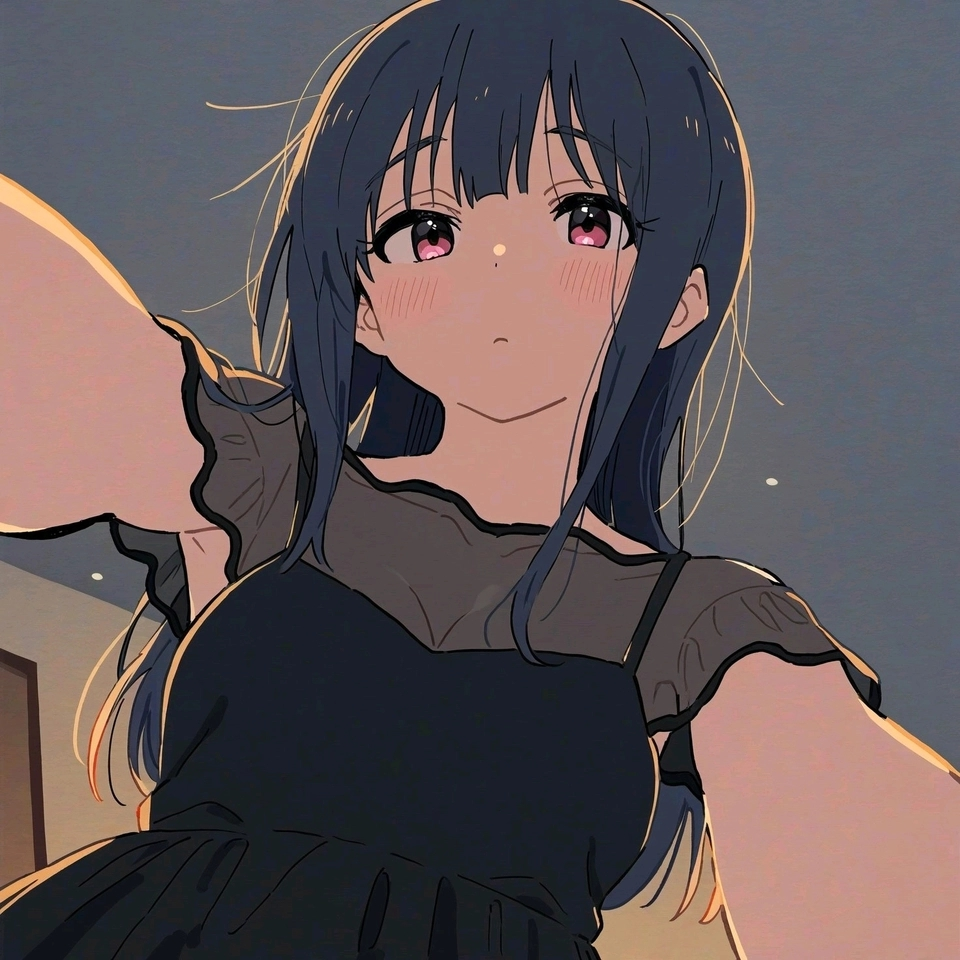

Liz and the blue bird
上映时间：2017
简介：
——曾经孤身一人的少女身边，来了一只青鸟——
铠冢霙 高中3年级 双簧管担当。
伞木希美 高中3年级 长笛担当。
和希美度过的每一天都很幸福的霙，以及曾一度退部后再次回归的希美。
初中时代，从孤身一人的霙被希美搭话的那一刻开始，
对于霙而言，希美就是世界本身。
希美会不会什么时候再次从自己面前消失，霙无法抹去这份不安。
之后，到了两人最后一次出赛的竞演会。
自由曲是《莉兹与青鸟》。
以童话为蓝本创作的这首曲子，是双簧管和长笛共演的独奏曲。
“故事都会有美好的结局，真好啊”
若无其事地这样说着的希美，以及一直害怕着离别的霙。
——一直一直，在我身边——
一边将童话故事和自己重合在一起，一边过着每一天的两人。
霙是莉兹，希美是青鸟。
但是……。
总有什么地方不契合的齿轮，寻求着一瞬的契合，而不停地转动着。
官方网站 ⇒
liz_bluebirdclick to get